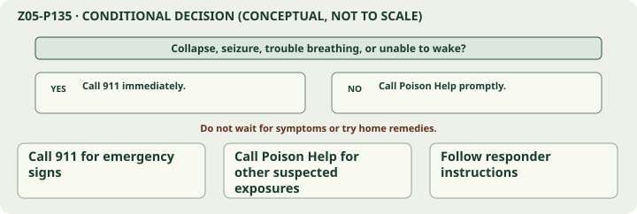

Z05-P135 · Wild foods and poisonous lookalikes · New manuscript
Poison Exposure Recognition and Emergency Referral (1-800-222-1222 / 911)
Provide clear, fail-closed layperson action steps and immediate escalation for suspected plant, berry, root, or mushroom poisoning.
When it applies · All suspected toxic ingestions, pediatric mouthing incidents, or severe plant-smoke/dermal exposures.
Equipment · Phone and known substance, timing or route details if safely available.

Actions
- Call 911 immediately for collapse, seizure, breathing trouble, or inability to wake. Follow dispatcher instructions and do not put anything in the person’s mouth.[B09, M15]
- For suspected ingestion without a life-threatening sign, call U.S. Poison Help at 1-800-222-1222 promptly. Do not wait for symptoms.[B09]
- Follow Poison Control or EMS for substance- and route-specific advice. Avoid home remedies, induced vomiting or new exposure while waiting.[B09, M15]
Failure recognition · Inducing vomiting or waiting for symptoms can risk harm and delay help.[B09]
Verify · Use the appropriate emergency or poison line promptly and report the known details.[B09, M15]
Stop or change course · For collapse, seizure, breathing trouble or inability to wake, call 911 immediately. For other suspected poison exposure get prompt Poison Control advice.[B09, M15]
Evidence and editorial notes
- B09 · National Capital Poison Center · First Aid for Poisonings (Current web edition)
- Section: When to call 911; get help from poison experts · Conditions: Suspected poisoning in the United States
Support: Call 911 for collapse, seizure, trouble breathing or inability to wake. Otherwise promptly call Poison Help at 1-800-222-1222.
Limitations: Use route- and substance-specific advice. Do not wait for symptoms or collect unknown material if doing so risks exposure or delays care. · Conflicting evidence: Conditions are recorded in the A03 audit.
Editorial note: Mandatory Z05 poison-response escalation. · Specialist reviewer: Clinical toxicologist / Poison Center
Primary source · checked 2026-11-25 - M15 · National Capital Poison Center · First Aid for Poisonings (Current web edition)
- Section: First aid for swallowed, inhaled, skin and eye exposure; when to call 911 · Conditions: Suspected poisoning in the U.S.
Support: For collapse, seizure, breathing trouble or inability to wake call 911. Otherwise get timely poison-center advice. Do not induce vomiting.
Limitations: Substance and route determine immediate care. Keep rescuers away from contaminated scenes. · Conflicting evidence: See A02 claim audit for boundaries.
Editorial note: Separates 911 life-threat activation from Poison Control guidance. · Specialist reviewer: Medical toxicology and poison control
Primary source · checked 2026-11-25
Source lineage · New manuscript (Z05 P19-C emergency referral) · Classification · New manuscript.